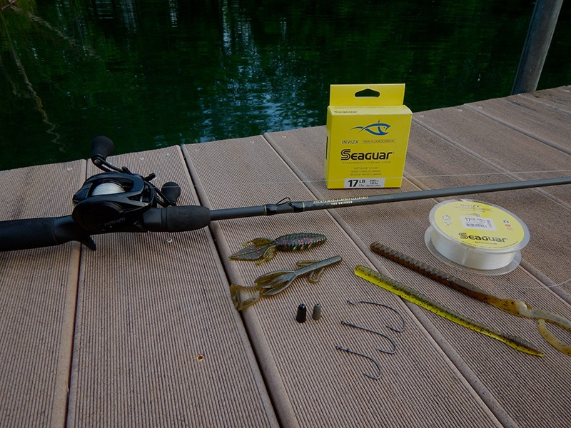
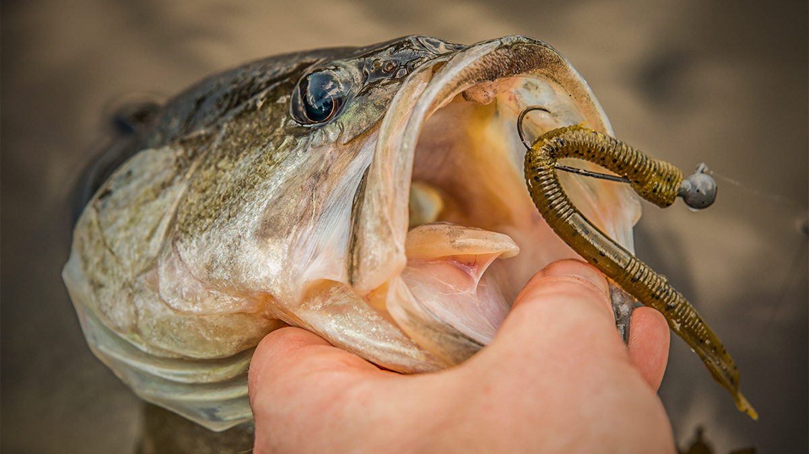

An exceptionally weedless and powerfully versatile setup, the Texas Rig has been taking fish on a ride over boat’s rails for decades. When rigged
correctly, it is one of the most efficient ways to fish nearly any soft plastic in vegetation-choked water without fear of getting snagged. Whether it’s a finesse rig,
heavy duty flippin’ rig, or something in between, you can customize the Texas Rig and outfit it to suit your specific conditions.To get started constructing your own
Texas Rig you will need a hook, a weight, a peg if necessary, and a soft plastic bait.
ROD

Rod, Reel, and Line
A Texas rig can be fishing with a variety of equipment. It will fish well using either a baitcaster or spinning tackle. Since Texas rigs are often used to fish heavy
vegetation I recommend a medium to heavy action rod.
A longer rod also will help you take up a lot of slack quickly on the hookset as fish will often pick up a Texas rig and run. Somewhere around a 7-foot Medium Heavy rod
with a little tip action is best to give you some casting control. You want the backbone to drive a good hook.
You really got to hit the fish on the hookset with a Texas rig because you need to get the hook out of the plastic that is keeping the rig weedless.
REEL
Generally speaking, almost any casting reel with a 6:1 to 7:1 gear ratio or even faster will set you up for success here. Texas rigging doesn’t often call for specialized
equipment.
However, speed becomes increasingly important when you are trying to pick up line quickly to catch up to a fish that’s swimming off with your bait.
As far as reel size is concerned, a 100- to 150-size casting reel will fit easily in the palm of your hand, so you can keep your fingers in direct contact with the rod blank
and/or your line to help you detect subtle bites.
LINE
Always let the type of cover you’re fishing around and the size of your presentation dictate the size and type of line you select for your Texas rig. For most applications.
Fluorocarbon lines ranging from 12- to 20-lb test offer the near invisibility, abrasion resistance, and minimal stretch that Texas rigs require. In the event that you are
fishing during the spawn or simply targeting bass sheltering in shallow cover, the added power of a braided mainline may be necessary for successful extraction.
During the spawn, big fish will often nest in some of the nastiest cover imaginable. Utilizing braid provides you with a little extra insurance when fishing for your next personal
best.
How & When To Texas-Rig!

Versatile Lure!
The Texas rig (aka “T-rig”) is one of the most popular rigs for presenting soft plastic baits in areas where there is dense cover because it rarely snags. It is the ideal “weedless”
rig for fishing in submerged vegetation, near underwater stumps, and in rocky areas.
Anytime you need a weedless, natural-looking bait worked slowly. You can allow the worm weight to slide freely to hold onto a light bite, peg it for better control in heavy cover,
or fish the rig weightless.
A Texas rig can be fished successfully through the thickest cover you can imagine — bulrushes, lily pads, grass, brush and timber. It performs best in shallow to moderate depths.
Some men would rather be photographed with their fish than with their wives."
-Gwen Cooper and Evelyn Haas